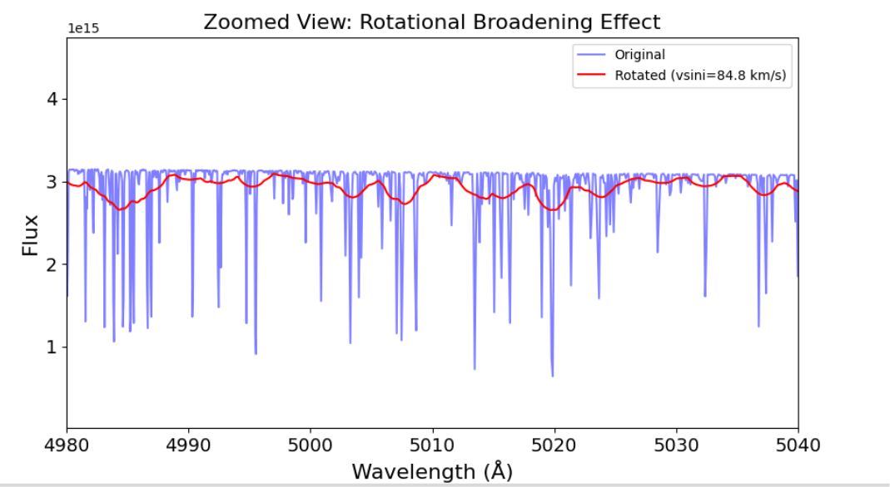

The Fast and the Furious
Exoplanets around hot, rapid rotators
Traditional techniques for extracting radial velocities (e.g., cross-correlation, template matching) are effective for detecting planets around cool stars. However, for stars beyond the Kraft break, Doppler precision deteriorates due to rotational broadening and the scarcity of absorption lines. To address this, I am using MARMOT for my targets (hot, rapid rotators) and developing a custom cross-correlation method to improve their radial velocity measurements.
The ultra-hot Jupiters in this project orbit extremely close to their stars and have inflated atmospheres, making them interesting targets for atmospheric retrievals and potential candidates for the upcoming Ariel mission. However, their host stars make precise radial velocity measurements difficult, leaving their masses poorly constrained. Uncertainty in a planet's mass introduces degeneracies into atmospheric retrievals, complicating our interpretation of its atmosphere. Better mass constraints, obtained through precise radial velocity measurements, are crucial for resolving this issue, and that is precisely what I am working on.
